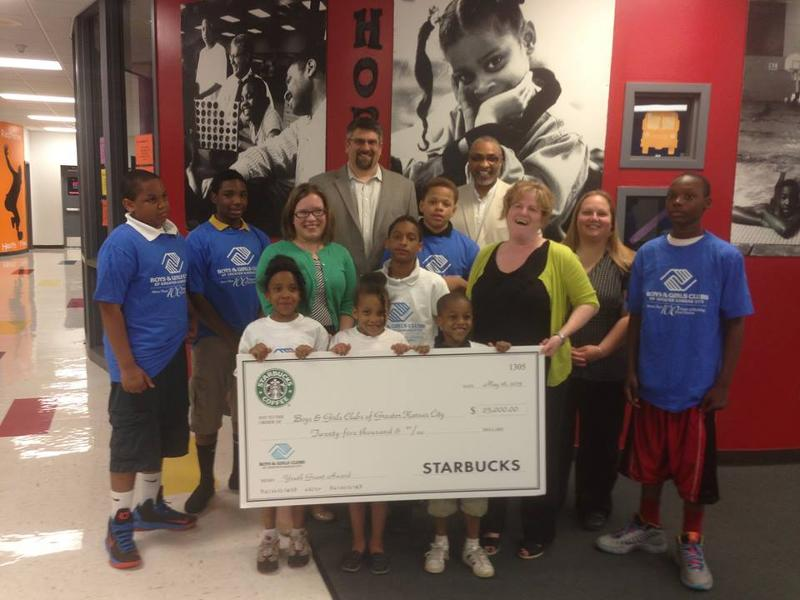

THE STARBUCKS FOUNDATION
YOUTH
Starbucks is committed to creating pathways to opportunities and employment in communities around the world. More than 290 million young people around the world are neither in school nor employed— one of the fastest growing populations. These young men and women represent a huge, untapped opportunity for an infusion of productivity and creativity in the workforce. At the same time there are also challenges for employers to find qualified candidates. The problem is not unique to Starbucks, nor can it be solved by us alone. That is why we are focusing on a comprehensive approach and collaborating with organizations on proven, as well as innovative, solutions to help young people get the skills and training they need to succeed in a rapidly changing global economy.
PROGRAMS
- Customer Service Excellence Training with YouthBuild USA
- Starbucks Work Placement Program
- Starbucks Apprenticeship - Barista Mastery and Customer Service
- Soong Ching Ling Foundation (CSCLF)
YOUTH GRANT OPPORTUNITIES
- Customer Service Excellence Training with YouthBuild USA
- Starbucks Work Placement Program
- Starbucks Apprenticeship - Barista Mastery and Customer Service
- Soong Ching Ling Foundation (CSCLF)


2016 Youth Grant Recipients
- After-School All-Stars, Los Angeles
- Arizona Call-A-Teen Resources
- Association for the Advancement of Mexican Americans
- Boys and Girls Club of King County (YouthForce)
- Chicago Urban League
- City Year
- Communities in School
- Honolulu Community Action Program, Inc.
- Juma Venture
- Junior Achievement
- Liberty’s Kitchen
- Mile High Youth Corps
- Public Allies
- Seeding Success
- STRIVE International
- The Choice Program
- The International Rescue Committee
- United Way
- YouthBuild Boston